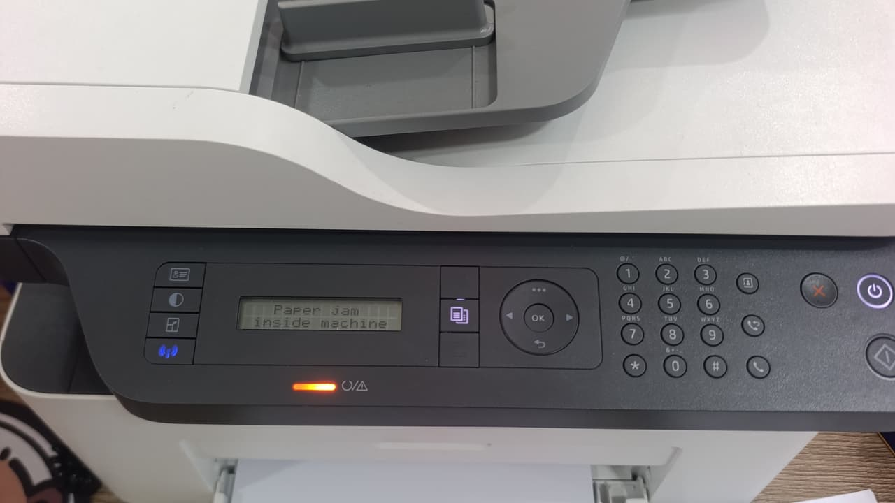

Nạp mực máy in Phú Mỹ Hưng — kỹ thuật quen thủ tục thẻ khách từng toà
Cửa hàng đặt tại 5/19 Phạm Hùng. Kỹ thuật tới Phú Mỹ Hưng trong 40 – 60 phút — xem máy rồi báo giá, anh/chị đồng ý thì mới tháo.

Phú Mỹ Hưng là khu duy nhất trong cả địa bàn khu Nam mà người ta tìm bằng đúng tên khu chứ không bằng tên quận. Lý do dễ hiểu: ở đây là cao ốc và nhà phố khép kín, và việc gọi kỹ thuật vào được bên trong là một vấn đề riêng — khác hẳn gọi thợ tới nhà phố ngoài đường lớn.
Phần khó không nằm ở máy in mà ở thủ tục. Mỗi toà một quy định: có toà chỉ cần đăng ký thẻ khách ở lễ tân, có toà yêu cầu cư dân hoặc nhân viên công ty xuống xác nhận, có toà hạn chế giờ cho khách kỹ thuật vào. Nếu không chuẩn bị, kỹ thuật dễ mất thêm nửa tiếng ngồi sảnh.
Thông tin nhanh — Phú Mỹ Hưng
| Thời gian tới | 40 – 60 phút |
| Nạp mực laser A4 | từ 80.000đ |
| Máy A3 / photocopy | từ 250.000đ |
| Phun mực hệ bình | từ 150.000đ |
| Giờ làm việc | 08:00 – 19:00 |
| Hoá đơn VAT | Có |
Trước khi kỹ thuật đi: ba thông tin giúp lên đúng lần đầu
Khi anh/chị gọi, chúng tôi hỏi ba điều: tên toà nhà, số căn hoặc số phòng, và toà có yêu cầu người xuống xác nhận không. Ba câu này nghe hơi nhiều nhưng tiết kiệm được cả lượt đi.
Kỹ thuật tới mặc đồng phục và mang thẻ nhân viên, vì nhiều toà không cho người không rõ danh tính lên. Chúng tôi cũng mang tấm lót trải sàn trước khi mở hộp mực — bụi mực rất mịn và nền căn hộ thường là sàn gỗ hoặc thảm.
Về cách gọi dịch vụ, khách Phú Mỹ Hưng phần lớn nói "thay mực máy in" hoặc "nạp mực máy in" — cùng một việc. Khối văn phòng cần thêm báo giá bằng văn bản và phiếu bảo hành ghi số trang, chúng tôi chuẩn bị sẵn.
Các khu trong Phú Mỹ Hưng nhận tận nơi
Cảnh Viên 1, 2, 3
Hưng Vượng 1, 2, 3
Mỹ Khánh 1 → 4
Sky Garden 1, 2, 3
Riverside Residence, Garden Court
Nam Long, Mỹ Phúc, Mỹ Đức, Mỹ Giang
Khu văn phòng và trường học quanh Nguyễn Đức Cảnh, Tôn Dật Tiên
Máy in trong căn hộ và văn phòng cao ốc: khác nhà phố ở đâu
Máy nhỏ, in ít, hay bị khô mực
Căn hộ thường dùng máy in nhỏ gọn và in rất ít — vài tuần một lần. Lỗi phổ biến nhất không phải hết mực mà là mực đóng bánh và trục từ chai. Vệ sinh hộp và nạp lại là xong, không cần thay hộp mới.
Không gian hẹp, sợ bụi mực
Mở hộp mực trong căn hộ sàn gỗ hoặc có máy lạnh kín là chuyện phải cẩn thận. Kỹ thuật trải tấm lót, hút mực thải bằng máy hút chuyên dụng thay vì thổi — không làm bụi bay trong phòng.
Văn phòng cần hồ sơ để thanh toán
Các công ty thuê văn phòng trong khu thường cần báo giá trước bằng văn bản để trình kế toán, và phiếu bảo hành sau khi làm. Chúng tôi gửi cả hai — anh/chị gửi danh sách dòng máy trước là được.
Tới trong bao lâu, tính theo từng khu của Phú Mỹ Hưng
Số dưới đây là thời gian thật từ lúc anh/chị gác máy tới lúc kỹ thuật có mặt, đo trong giờ hành chính ngày thường.
| Khu | Thời gian tới | Ghi chú |
|---|---|---|
| Khu văn phòng Nguyễn Đức Cảnh, Tôn Dật Tiên | 40 – 50 phút | Thủ tục lễ tân nhanh hơn khu căn hộ. |
| Cảnh Viên 1, 2, 3 | 40 – 55 phút | Đã gồm thời gian làm thẻ khách. |
| Hưng Vượng 1, 2, 3 | 40 – 55 phút | Một số block cần cư dân xuống xác nhận. |
| Mỹ Khánh 1 → 4 | 45 – 60 phút | Nhiều block, cho đúng số block và số căn. |
| Sky Garden 1, 2, 3 | 45 – 60 phút | Lễ tân giữ giấy tờ, kỹ thuật mang theo CCCD. |
| Riverside Residence, Garden Court | 45 – 60 phút | Có toà giới hạn giờ cho khách kỹ thuật vào. |
| Nam Long, Mỹ Phúc, Mỹ Đức, Mỹ Giang | 45 – 60 phút | Nhà phố khép kín, báo trước cổng khu. |
Giờ cao điểm sáng 7–8h và chiều 17–18h cộng thêm khoảng 10 phút. Ca đặt trước thì đúng khung giờ hẹn.
Máy in trong căn hộ và văn phòng cao ốc: lỗi hay gặp
Những lỗi dưới đây kỹ thuật mang sẵn vật tư nên xử lý xong ngay trong một lượt, không phải hẹn lại.
| Bản in bị gì | Thường là do | Xử lý tại chỗ |
|---|---|---|
| In ra giấy trắng hoặc rất mờ | Mực đóng bánh và trục từ chai vì căn hộ in rất ít, có khi vài tuần một lần. | Vệ sinh buồng mực và nạp lại 80.000 – 100.000đ. |
| Máy phun Epson sọc ngang, thiếu màu | Đầu phun nghẹt do để lâu không in. | Thông đầu phun 100.000 – 250.000đ tuỳ mức nghẹt, báo giá trước khi làm. |
| Máy báo thay hộp dù mới nạp | Chip đã đếm hết số trang — HP đời mới và Samsung hay khoá. | Thay chip 80.000 – 150.000đ. |
| In mờ một bên trang | Trục từ chai sau vài lần nạp. | Thay trục từ 120.000 – 180.000đ, in thử ngay tại chỗ. |
| Mực lem lên bản in | Gạt mực mòn. | Thay gạt 100.000 – 150.000đ kèm hút sạch mực thải bằng máy hút chuyên dụng. |
| Sọc đen dọc trang lặp theo chu kỳ | Trống xước. | Thay trống 180.000 – 280.000đ. |
Nói giúp mấy thứ này lúc gọi, đỡ mất một lượt đi lại
Tên toà và số căn hoặc số phòng
Mỗi toà trong khu một quy định. Biết đúng toà là chúng tôi gọi lễ tân trước và chuẩn bị đúng giấy tờ.
Ai sẽ xác nhận ở lễ tân
Có toà bắt buộc cư dân hoặc nhân viên công ty xuống xác nhận mới cho lên. Hẹn trước ai sẽ ra là đỡ mất nửa tiếng chờ.
Giờ toà cho khách kỹ thuật vào
Vài toà giới hạn khung giờ. Anh/chị báo trước thì chúng tôi xếp lịch vào đúng khung đó ngay từ đầu.
Máy đặt ở đâu trong căn hộ
Sàn gỗ hoặc phòng máy lạnh kín thì kỹ thuật trải tấm lót và hút mực thải bằng máy hút thay vì thổi. Nói trước để chuẩn bị.
Bảng giá đầy đủ theo mã hộp mực
Giá như nhau cho cả bảy khu — chỉ thời gian tới là khác.
Máy hỏng chứ không chỉ hết mực?
Xem bảng triệu chứng – nguyên nhân để biết việc nào xử lý được ngay tại chỗ.
Câu hỏi thường gặp — khách Phú Mỹ Hưng
Kỹ thuật có vào được các toà trong Phú Mỹ Hưng không?
Được. Chúng tôi làm quen thủ tục thẻ khách của các toà ở đây. Anh/chị cho biết tên toà và số căn; nếu toà yêu cầu cư dân xác nhận thì nhắn trước giúp — kỹ thuật mặc đồng phục, mang thẻ nhân viên và lên đúng lần đầu.
Nạp mực trong căn hộ có làm bẩn nhà không?
Không. Kỹ thuật trải tấm lót trước khi mở hộp mực và hút mực thải bằng máy hút chuyên dụng thay vì thổi. Làm xong dọn sạch chỗ làm việc trước khi rời đi.
Nạp mực máy in Phú Mỹ Hưng giá bao nhiêu?
Giá giống toàn hệ thống, không tính thêm vì ở khu cao cấp: laser A4 HP và Canon 80.000 – 100.000đ, Brother và Samsung 120.000đ. Phát sinh linh kiện thì báo giá trước và chờ anh/chị đồng ý.
Công ty trong khu cần báo giá trước bằng văn bản, có gửi không?
Có. Anh/chị gửi danh sách dòng máy, chúng tôi gửi lại báo giá bằng văn bản để trình kế toán, rồi mới hẹn lịch. Sau khi làm có phiếu bảo hành ghi rõ dòng máy và số trang.
Kỹ thuật mất bao lâu để lên được căn hộ?
Thời gian trong bảng trên đã gồm khâu làm thẻ khách. Toà nào chỉ cần đăng ký lễ tân thì nhanh; toà bắt cư dân xuống xác nhận thì phụ thuộc anh/chị có mặt hay không — nên chúng tôi gọi trước khi tới.
Có nhận văn phòng công ty trong khu không?
Có, và nhóm này chúng tôi gửi báo giá bằng văn bản trước để kế toán duyệt, kèm phiếu bảo hành sau khi làm. Công ty nhiều máy thì gộp một lượt.
Văn phòng trong khu cần hoá đơn VAT, có xuất không?
Có. Gửi thông tin xuất hoá đơn qua Zalo lúc đặt lịch, chúng tôi chuẩn bị sẵn cùng báo giá bằng văn bản cho kế toán.
Khu vực lân cận
Đặt nạp mực tận nơi Phú Mỹ Hưng
Kỹ thuật tới trong 40 – 60 phút. Xem máy rồi báo giá, anh/chị đồng ý mới tháo.